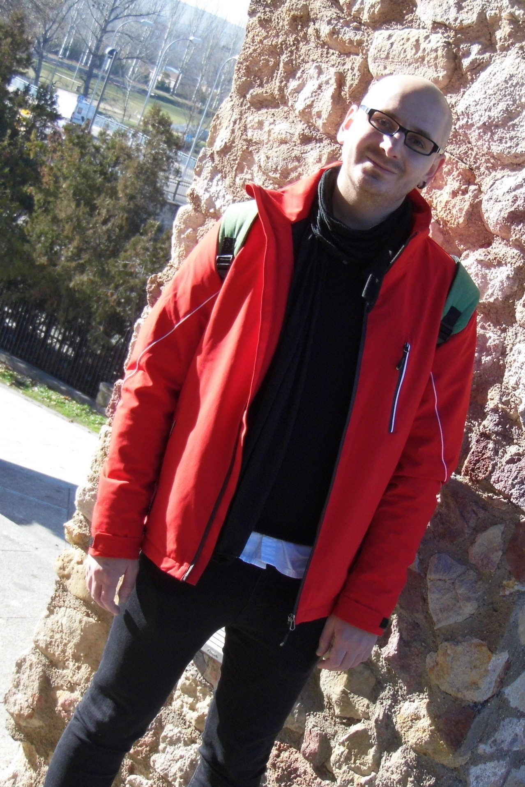

I am an Assistant Professor (Profesor Ayudante Doctor) of Mathematics at Rey Juan Carlos University.
Address: Room 026, Departamental II, Campus de Móstoles.
E-Mail: alexandru [dot] iosif [at] urjc [dot] es

This is a non-exhaustive list of my talks and posters.
Undergraduate Students Seminar. Reading Chapter 9 from Using Algebraic Geometry (Cox, Little, O'Shea).
Aquí dejo información útil, entre otras cosas, sobre plazas en Universidades Públicas españolas, poniendo énfasis en las plazas de Ayudante Doctor, así como otros datos de carácter burocrático.
Enlaces a las secciones de empleo público para personal docente e investigador (PDI) en España (sobre todo plazas de Ayudante Doctor).
Madrid y Zona Centro Andalucía Cataluña, Levante y Murcia Norte y Oeste Islas Otras webs generales (con listas incompletas)En el futuro, añadiré guías detalladas sobre los requisitos administrativos necesarios para acceder a plazas académicas en España. Los temas clave incluirán:
Nota: Estos procedimientos pueden ser lentos, por lo que se recomienda encarecidamente iniciarlos con bastante antelación a los plazos de solicitud.